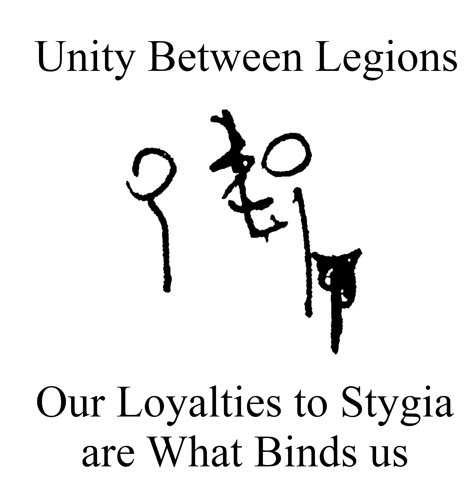
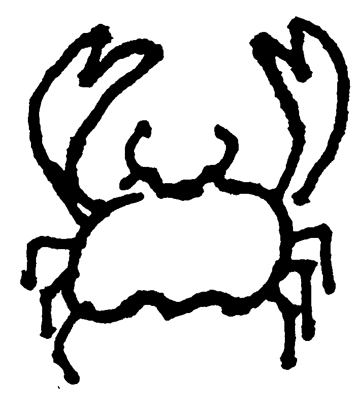

Journal Entry
May 1224
24th of May, 1224
Woke up to overcast skies and a chill in the air. Thankfully no rain; I should be able to walk the remaining road to Arthrone today, hopefully without incident.
As I came into the town I was greeted by the local tavern, an
establishment called The Wandering Bear. The barkeep was a woman from
Eire (from across the channel!) named Nora. He served me a drink and
some victuals, and I sat down in the I’ve never seen such a lively town;
not even Plour Plëo Ploërmel had as many folks in
all kinds of attire doing who knows what. A youth around my age, named
Cadigan, who worked as a cook at the tavern kindly informed me that I
had arrived just in time to see the festival; it would start the
following day. He then taught me to play Nine Man Mooressee appdx. B
, of which we played a lovely game of. I also met Kelt,
the head of the healers guild, who informed me that they would
appreciate help healing participants in the tournament they sponsor as
part of the festivalshow up around 11 at the healer’s guild (see appdx.
A)
. The Lady’s Lodge is a local establishment with beds
available for rent, and is reccomended to me by many people I speak to,
and is where I will likely lodge for the night.
25th of May, 1224
Horrendous tidings! Last night I stumbled upon a house filled to the
brim with human remains. Severed hands, bloody rags…. I’ll spare the me
of the future the curse of accurate recall of the experience. I
immediately fled and informed the local Father about the bodies, and
while he didn’t believe me at first, he dispatched a friend of the
church to investigate alongside me, a girl with an intimidating halberd
named Pick. After surveying the scene, Pick said that this was likely a
prank by some vandals Vandals? Do vandals normally have vandalize with human
corpses?!?
. I returned to the Wandering Bear. I was shaken greatly
by the experience and turned to drink, some local “blue spirit”. Still,
I find myself unable to fully shake off the experience. I think I will
continue to investigate this building today, for my own peace of mind if
nothing else.
Despite the ghastly events of last night, the residents of this town continue to treat me with the greatest warmth; Before leaving me, Pick lent me an old blade of hers (I’ve taken to clutching it the same way a child might clutch a favored toy). This morning, Nora provided me with a hearty breakfast of bacon and eggs. Under her advice, I may enter the “friendly” bracket of the upcoming tournament to learn basic skill with the blade.
The more I look into this building the more disturbed I become. This morning I returned to the building with corpses to find it unsecured and unguarded again. I entered the building in daylight to find the scene less frighting but no less disturbing. This time, I noticed areas for sleeping and utensils, tools and bottles with liquid scattered across the room; it seemed likely that someone had been living with the corpses for some time. Unfortunately none of these personal effects provided any clues as to who any of the parties were, where the bodies had come from, or why this had been done. Knowing that someone is living in this building though, I found a vantage point to observe the building and the people that enter and exit it. As I watched the building, a man dressed in yellow and chains entered the building for a minute before exiting it; I assumed he was a local constable of some sort and waved him over to my vantage point. The man was not a constable but introduced himself as Lars the Strong. I asked if he had any relation to Lars the Stranger, a murderer that other patrons had told me about; he said that there was no relation and all similarities were merely coincidence. I asked since Lars the Strangler was also known to wear chains and yellow, but he insisted that it was an unfortunate coincidence. Lars the Strong informed me that there was someone injured and I hurried to the healer’s guild to see if there was anything I could do to help, but the local healers had things well in hand.
I did run into F. Marcus again this morning, however, and I showed
him the ghastly sight in person, alongside his “intern”assistant?
Ren.Indeed, the sight was so ghastly and no less disgusting
for having seen it in daylight. I fear that the sights have affected me
so much that I begin hallucinating; I swear that there was a voice
speaking to me in that house, but neither of my companions showed any
sign of hearing it.
F. Marcus told me about a regrettable incident where an
Arthrone resident killed many residents of a neighboring town, creating
a feud between the two towns; he theorized that these vandals might be
bored youths from that other town. When questioned about the provence of
the very real body parts and bones, he suspected that these were remains
taken from the local crypt. Once we were there the Father went inside
alonewhy did he need us to come with him in that case?
to confirm that these bones had in fact been disturbed.
Unfortunately this does not answer all my questions: if this prank were
merely the result of some lifted crypt remains, where did the “fresh
meat” come from? And why would these prankers choose to sleep and eat in
this gory mess if their home was but an hour’s walk away? I’m not sure
this story adds up. And most concerningly, if it was the work of
pranksters, how and why were there spiderwebs from floor to ceiling?
It is an utterly foreign feeling to me, but I am
nervous around F. Marcus. The Sisters don’t know where I am, but I worry
that he will recognize me and write them and they will come to get me
and it will be a whole thing.
If someone was living there just as a prank, how are they
not disturbing the spiderwebs when they do so? Are they crawling on the
floor to reach their sleeping spots every time? More investigation is
neccesary.
On the way back I noticed these posters
A rough drawing of one of the posters.
, seemingly disturbing propoganda of some kind. One of
them referred to a “Stygian Legion,” a name that sounds classical; Ren
tells me that that there’s a lodge of astrologers called the Rune and
Rod and that one of themIo?
might have some insight as to what these posters mean.
Visiting this lodge, I run into one of these astrolgers who expressed an
interest in these posters, and I took her out to where we saw them and
while she did not understand their meaning immediately, she took a set
of posters back to the lodge for analysis.
Returning to my room at the Lady’s lodge, I met Cadigan and Volk, a
man who I last saw being dragged to his trial last night;he was on trial for… something? I wasn’t sure and I was
too tired to listen closely. Also this was after I had found the house
with the bodies and I missed most of his trial showing Pick the corpse
house.
Cadigan regaled me with tales about the ocean and
descriptions of the various creatures and allegedly delicious sea meats
available there
An
image Cadigan so kindly drew for me of a crab.
.
A brief entry; I write this on the road to Plurmel. I accompanied one
of the Baron’s men to report the charnel house and to see if “Lars the
Strong” I met was truly the same as “Lars the Strangler.” The festival
was nice; I participated in the friendly competition, but unfortunately
lost both my matches. I have a long way to go to be able to defend
myself. After fighting was an archery competition, and then a recreation
of the town’s founding and patron saint, where the saint raised the
wolves to fight off the bear; it’s all so charming and I do wish I had
more time to do the proceedings justice. Unfortunatelytwas strange; the man-at-arms claimed that Nora had….
Bewitched him somehow? Nora had snuck in while he was “resting his eyes”
but he claimed that she did… something to her on the way out.
, after the festivities, Nora, the tavern manager was
dragged in in chains; apparantly Lars the Strangler had been arrested
and Nora had set him and the cell he was in on fire, killing him, for
which she was put on trial. Lars had already escaped custody once and
was thus an outlaw, so the only issue being litigated was the charges of
tresspass and property damage, of which she was fined 8 silver and
change. Nora was belligerent throughout the trial and was unhappy with
the size of her fineafter having killed a man!
; this behavior of hers is somehow both surprising yet
completely expected. Earlier in the day the constable suggested that
“Lars the Strong” and “Lars the Strangler”Strongler?
were one and the same, and given that he had entered the
building, he remained one of my only leads. While I can no longer
question him, examining the body will at least confirm if the Lars I saw
really was the notorious murderer, and may lead to other clues. Nora then proceeded to borrow money from her friends to
pay the fine. Oddly enough I noticed one man she borrowed coin from
handing something to the Constable after the trial?
Update: Lars is indeed the same Lars that approached me that morning. I thought the smell of the corpsolium was bad, but there’s something disturbing about the smell of charred human flesh that I may never forget.
The Baron’s son took my report, but he did not seem overly concerned with the situation. While Lars could not tell me anything, from Barony tax records it seems that the corpseolium is owned and taxes are being paid on the property by a “Heather”. It’s not much but it’s the only lead I have.
Disaster! I returned to the Rune and Rod to ask about Heather.
Unfortunately, these astrologers are not only somehow worse than
useless, but even worse than that, are pagans. Interestingly enough, one
of them speaks of the corpse house as if it had always been here; he
referred to it as a mausoleum owned by “Auntie Heather.” I would later find that there are a total of four
places in town that people would claim corpses should be: the crypt, the
gravegard, the morgue and the mausoleum. Corposoleum?
After further investigation it seems that Auntie Heather
has been a fixture of Arthrone for as long as anyone can remember; she
is the proprietorbut she is not the owner
of Reading Leaves, the local tea-shop. Apparantly there
will be a party later tonight and Heather will be there; hopefully
asking her questions will shed any amount of light on this situation.
Asking the townfolk, it seems that it is difficult to accidentally pay
taxes on a property, so if it is not Heather’s, she should at least know
who’s building it actually is. In the meantime, I hear dinner is being
served at the Wandering Bear, and I’m famished.
Dinner was delicious: a creamy wild mushroom soup formed the
centerpiece of the meal, perfect to compliment the thick slices of
crusty bread and juicy, fatty ham, served in contrast with the light and
airy braised cabbages; I may have to stay in this town for Cadigan’s
cooking alone. I dined with Volk and Thorne, my second opponent’s
brother who had kindly given me a short lesson in the sword after my
defeat at his sister’s hands. Azeleos, another member of tavern staff, suggests that
the evidence is consistent with a spider with human hands: perhaps a
“Crab”?
The topic of conversation turned unfortunately to the
corpses in the corpsolieum, and the strange inconsistencies that I’ve
noticed. Throne suggests that the responsible party could not be a
corporeal human, and could instead be a spirit or ghost of some kind.
I’m not sure if ghosts are realobviously there’s the Holy Spirit, but I’m not sure
about others.
but are incorporeal beings really capable of such…
slaughter? Either way, Thorne has offered to come with me to investigate
the corpsoleium after dinner, with an eye towards the supernatural this
time around.
26th of May, 1224
Everyone in this town has been lying to me from the moment I walked
in. Pick, VolkVolk… that one hurt. I had a sense that stories didn’t
add up, but you seemed to be geniunely on my side and just as confused
as I was.
, Thorne… Even Nora, Ren… Everone has been
LYING to my FACE. With no shame, under a guise
of kindness, “For my own good.” Apparantly ghosts are real. And many
other things that were only myths… they’re real as well. And not only
are they real, but they feel entitled to kill me horribly just for the
sin of knowing that they exist.
After dinner, Thorne and I headed off to the corpseolium for further
investigation. Apparantly this last visit to the corpseolium was the
final straw, as we had been there for minutes when the voices started.
They told me to get out, that there was nothing there, and then I found
myself out front of the building, saying “I should go back to my room
and not look into any of this.” I will admit I acted rashly, refusing to
leave until the voices told me where the bodies came from. It was at
this time that Volk and Pix came up behind us. As Volk approached he
yelled at me: “you couldn’t leave things well enough alone, could you?”
I will admit, I had suspected that people in the town were lying to me.
The stories that they fed me were inconsistent but all wanted me to stop
looking into the HOUSE FULL OF BODIES IN THE MIDDLE OF TOWN NEXT TO THE
CONSTABLES HOUSE. I even know that Pick was…. either an active
conspirator or an unwitting one. But as far as I could tell, Volk had
been just as confused and concerned as I was; I might even have
considered him a friend. So to see him walking towards me, yelling at
me, revealing that he not only knew, but lied to me, misdirected me,
kept me in the dark…. it did not exactly inspire calm, rational words
from me. This escalated the argument until the ghost had enough. She
materialized in front of me, a translucent figure, devoid of all color,
with dark streaks around her eyes standing in stark contrast to the
deathly pallor that made up the rest of her figure…. she materialized in
front of me on the porch and screamed in my face. Terrified, I ran for
my life towards the Wandering Bear; in my haste to escape I dropped this
journalif you see any dirt stains here, that’s why
. Eventually Pick caught up to me outside the tavern with
my journal. I did not think that she would kill me in front of so many
witnesses, and I did not have the energy to run further. Thankfully she
did not wish to kill me, and I went with her to the church, where Sister
Sigrid and Pick explained what had just occured to me.
The corpses in the Corpseolium are not real, but illusions formed by the spirits to keep us away from their homes. These spiritual entities do not like to be disturbed or sought out, and that’s why everyone lied to me, why they claimed they were protecting me: so that I wouldn’t seek out these ghosts. Ren and many of the astrologers are also not normal: they are sorcerers, capable of magicks out of a fairytale. Ren– Fucking Ren apparantly used his magicks this morning to tamper with my memories at some point today; this isn’t the first time I got too close to the truth. According to Sister Sigrid, these are not the only secrets in this town, but knowing any of them would expose me to more danger, so I was given a pat on the back, sworn to secrecy about what I had experienced today and sent on my way, like that would actually make me safe. Not knowing what else to do, I returned to the Wandering Bear, where Cadigan was working.
Cadigan… Cadigan may have been the only person in town who did not
decieve me from the start. While everyone else in town was treating me
like a mushroom, Cadigan was and is still blissfully unaware of any of
these things. I would later learn that his mind, like the minds of most
peopleWhy is my mind different?
, filters out anything supernatural into something
frightening but ultimately mundane. He was truly unaware of any of these
goings-on in the town. It may be melodramatic, but at this moment, he
was the only one I could call friend. But I’m rambling now. I write this
entry only technically on the 26th of May: it is as far as I can tell
around 1 in the morning, and we have barricaded ourselves in the
Wandering Bear as demon cultists siege the town. If this writing is
largely illegible, it is because F. Marcus has transformed my right arm
into a grotesque tentacle of some kindhe did not warn me before the tentacle thing
; I am writing this with my left in haste before another
wave of attacks. There’s not a moment’s respite; I can hear fighting and
screaming scattered in the darkness. These cultist-monsters came from
the swamp, their skin an unnatural color and their arms replaced with
tentaclesThese tentacles were much like mine, now that I think
about it
. They are apparantly associated with the bog witchThe Bog Witch is also a demon who is also Volk’s
fiance?
. I have taken over the task of identifying the cultists
from VolkSee Appdx. C
, one that seemed simple before my encounter with these…
beings.
While I was still drowning my sorrows in the Wandering Bear for the second night in a row, S. Sigrid came to find me; she said it couldn’t wait. She brought me to the tea-house, where F. Marcus, Ren and Pick waited for me. After getting fucked with by some ghosts for a while, F. Marcus offered me a choice: I could leave Arthrone, keep my mouth shut, and try to forget everything I had experience today. Or I could stay in Arthorne and fight against demon-worshippers and ghosts and who knows what and probably die horribly. I think it’s obvious which path I chose.
My first task: to root out one of four demon cults that were
targetting Arthorne. To start, I sought out Volk at the Lady’s Lodge; he
was apparantly actually on trial for endangering the town in
his plan to defeat one of the five demonsSee Appdx. C
in a manner that wasn’t really his fault. He briefly
briefed me on the five cults, as well as a history of why Arthorne is so
weird. It was during this briefing that we recieved word that cultists
had been spotted on the outskirts of town. After some skirmishes in the
center of town, we moved into the Tavern as it was more defensible, and
are now taking shifts defending it and providing support to those who
are going out into the rest of town to hunt the cultists down. This
brings you roughly up to the present moment and not a moment too soon– I
think I finally see F. Marcus and I need him to change my arm back.
It’s been two days since I’ve arrived in Arthorne. Two days. The
siege last night ended without any casualties amongst the townsfolk. We
all got some sleep starting in the wee hours of the morning without
incident. I decided that I would go to the lake that is the source of
demonic incursionssee appdx. A, C
to see if there was any evidence that could be gleaned
from the attacks last night. As the lake is a surveilled and contested
location, I brought Cadigan with me, both as a guide and to draw
attention away from me, as it is well known that Cadigan is not “read
in” to the strange goings-on in town. While there were no obvious clues,
there was an odd symbol carved into a table near the lake shore. As we
reapproached the town, however, we heard screams and were ultimately
seperated. When I finally met up with Ren, I learned that more cultists
were attacking the town. Unfortunately instead of a siege or pitched
battle, these cultists were in fact raiding and running, targeting
sorcerers and their “glades,” a place that is important to them (though
I’m not sure how). Somewhere in the fighting I realized that no one knew
where Cadigan had gone, and I split off from the rest of the group to
make sure he was safe. I did eventually find Cadigan, who was hiding in
the bushes behind the tavern. His mind had apparantly interpreted these
cultists as bandits throwing jars of beesthe cultists had some magickal spell that would cause
vermin to swarm and attack us
. Either way I was able to stash Cadigan in the brewery,
but found that Ren had, against my advice, seperated from the larger
group to come make sure I was safe. We then avoided roving packs of
cultists as we headed towards the center of town to meet up with
othersLook into getting some strong spirits from the brewery
to preserve the samples of tentacles and organs that I took. Find
someone to sketch the faces of the cultists before they decay too
badly.
. Eventually we did come across a set of cultists killed
presumably by another of the towns defenders. Cutting into them, I
noticed horrible pulsating organs and horrific limbs. I cut off some
samples, including the head of a cultist and stashed them in the church
for storage. One by one the roaving demonic packs were struck down, and
the town moved to clean everything up.
There are many people investigating where these cultists came from on the supernatural side. I don’t have much to offer on that front. Instead, I’ll look on the “mundane” side of things. These cultists were people before they were turned into… whatever they had become. They had to have families, jobs, people that knew them before their changes. The authorities in Plormel are still waiting on me to write about what I ultimately discover about these bodies here in Arthorne: I may kill two birds with one stone: Blame the bodies in that building on these “raiders”, and use that to get the Baron’s records and men-at-arms to track down the original identities of these “raiders.”